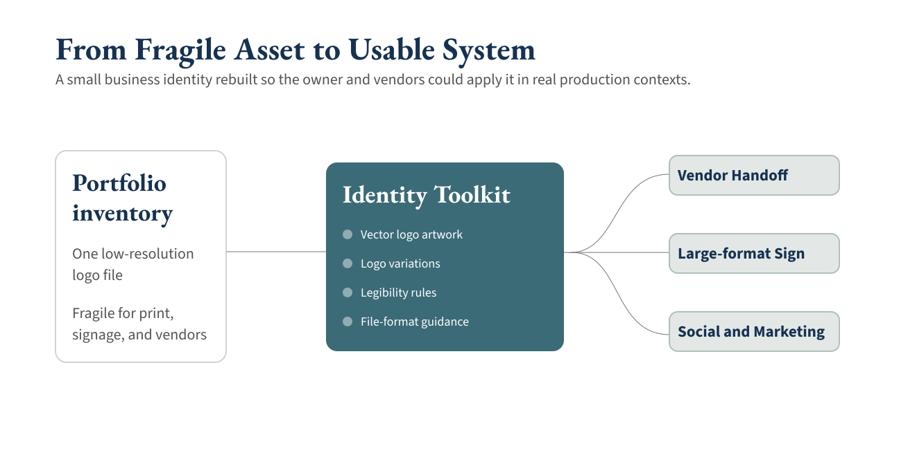

Hedgerow Pottery · Identity System & Brand Enablement
Hedgerow Pottery Identity System
I turned a fragile logo file into a production-ready identity system, giving Hedgerow Pottery a guidebook, vendor-ready assets, and a brand toolkit that could work in real production without constant design translation.
A Fragile Mark Became a Usable System
Hedgerow Pottery already had a recognizable identity, but it lived inside a small, low-resolution file that could not reliably carry the business across signage, print, social, and vendor handoffs.
From a low-resolution source to production-ready artwork.
Before
A fragile logo source that could not support every production context.
After
A cleaner mark with stronger hierarchy, spacing, and reproduction quality.
The Real Problem Was Production Fragility
The visible problem was a logo that needed cleanup. The deeper business problem was that the identity could not move cleanly through the places a small business actually needs its brand to work: a sign vendor, printed materials, social posts, merchandise, and day-to-day marketing.
Without reusable files or simple standards, every new use risked becoming a one-off translation. The business needed a right-sized system the owner and vendors could understand without turning every production decision into a design consultation.
I Reframed the Ask as a Toolkit the Owner Could Run
I treated the work as brand-system enablement, not a cosmetic refresh. The goal was to turn trapped design knowledge into practical assets, rules, and guidance that would keep working after the project left my hands.
That meant sizing the solution to the business: enough structure to make decisions repeatable, but not a heavy brand program that a small team would never maintain.
The Handoff Worked When the Sign Went to Production
The strongest proof point was not the guidebook itself. It was what happened after the handoff: a vendor used the guidebook and production files directly to produce the large-format outdoor sign.
That matters because the system had to survive outside the designer's hands. The rebuilt artwork made the sign technically possible; the guidebook and file guidance made it usable by the people responsible for producing it.

What I Designed and Led
I was solo on the identity system, from diagnosis through production handoff. I designed the assets, clarified the rules, and created the guidance the client and vendors needed to apply the brand consistently.
- Rebuilt the logo as scalable vector artwork.
- Created flexible logo variations for different backgrounds, sizes, and production contexts.
- Improved contrast, hierarchy, spacing, and small-size legibility.
- Prepared production-ready files for signage, print, social, and marketing use.
- Built a lightweight guidebook with usage rules and vendor handoff guidance.

The System Connected Assets, Rules, and Real-World Use
The toolkit connected the rebuilt mark to the decisions that usually create friction: which file to use, which version fits the context, and how to preserve readability as the identity moves from screen to print to signage.

Outcome: The Identity Left My Hands and Kept Working
Hedgerow ended with more than cleaner artwork. The business had a practical identity system that could be handed to vendors and reused across real touchpoints.
The produced sign confirmed the handoff worked at large scale, and the identity assets are now used across social channels and marketing materials. The value here is production readiness, clearer quality standards, and a brand system the business could keep using.